01 / The idea
A birthday greeting becomes an adventure
The starting point was a ninth birthday and a gift: a grey two-wheel scooter. I wanted the present to arrive at the end of an adventure. The original idea, ‘The Island of Nine Treasures’, connected nine treasures with personal qualities and wishes: courage, curiosity, ingenuity, speed, agility, persistence, good friends, luck and a big dream. During production I reduced the route to four actual trials. The original title kept its link with the birthday.
Treasure Island inspired the pirate atmosphere and the mock-serious character dossier. I made that dossier deliberately illustrated; the rest of the film uses a photorealistic character based on the reference photographs. For the dossier I supplied a voice recording, a ticking-clock sound and the sea ambience. When lettering appeared and disappeared in an early animation, holding part of the image helped keep it readable. The acceptance stamp had to visibly land on the page with a sound.
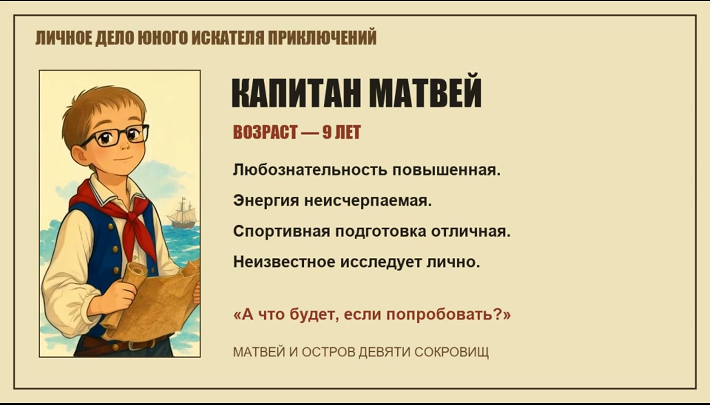
My early results exposed the difference between a description and a scene. There was too little action, the trials barely read, and the chest kept changing. I started treating every sequence as a set of shots: establish a problem, show the reaction, show the physical action, then its result. Reviewing each stage mattered more than making the prompt longer.
02 / The full story
From a pirate dossier to a shooting star
The complete plot follows, including the gift and ending.
A ship, a folder and a map
A sailing ship approaches an island and its bay. Inside the cabin, a pirate places a personnel folder on a table. The dossier introduces a nine-year-old adventurer, and a stamp admits him to the crew. On deck, the photorealistic character receives a map and a mission: four trials. A boat brings him ashore; he checks the route and walks into the jungle.
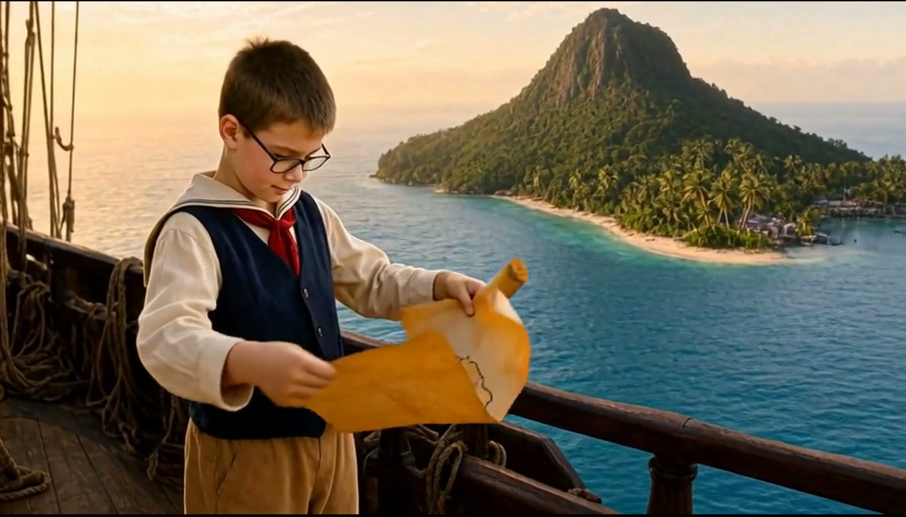
Trial one: courage
The first obstacle is a long suspension bridge above a deep valley. It sways, the camera circles around it to reveal the drop, and a plank cracks. The character reaches the opposite bank just in time. Only after the landing does the courage achievement appear.
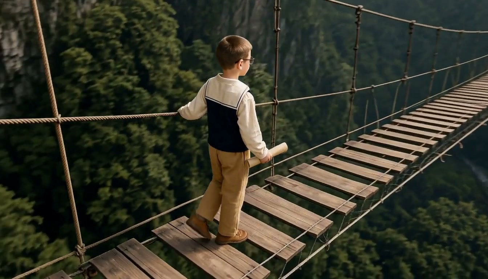
Trial two: curiosity
The trail reaches a wall of vines. The camera shows the dead end from the character’s viewpoint before he enters the shot. He looks around, scratches his head and notices a flashing shell on a sign. ‘Oh!’ He approaches and physically turns the signboard. The vines part at the same time, revealing a passage. He carries the map through it and earns the curiosity achievement.
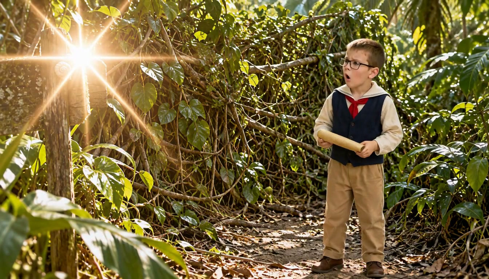
Trial three: ingenuity
The passage leads to a stone platform with water channels, two rotating discs, a waterwheel and a closed door. I built the puzzle around the logic of a pipe-connecting game. The character puts the map down and tries a disc in the wrong direction. Turning the wheel by hand is no lasting solution either: the door opens while he works, then closes when he lets go to wipe away sweat.
He must connect the water’s route. After the first correct turn, the stream reaches the second obstacle. After the second, it reaches the wheel, drives it and holds the door open. The character can now leave the mechanism and walk through. The third achievement marks ingenuity.
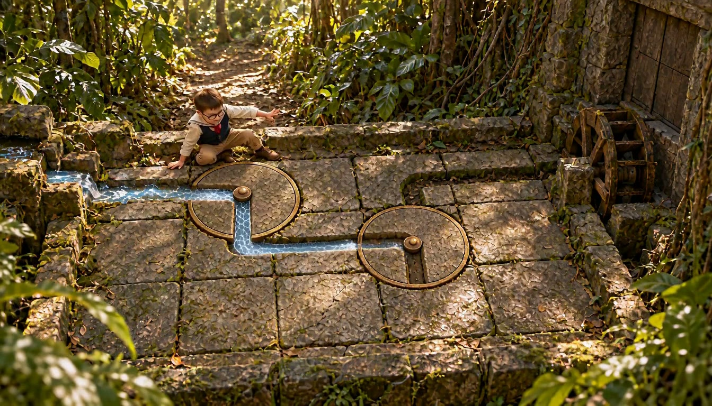
Trial four: speed
A bell starts a large hourglass and opens a distant gate. The character gets distracted by the falling sand before realizing that the clock is already running. He puts away the map and sprints. The edit alternates the run, the sand and the closing gate. He makes it through, catches his breath and earns the fourth achievement. There are no magical stamps to collect on the map: he simply needs to reach the marked treasure.
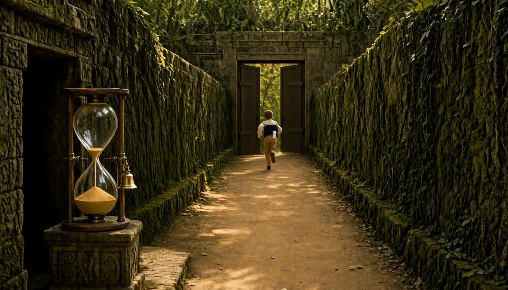
The chest and a very unusual vessel
Above the bay, the character finds the chest, puts the map away and says, ‘There you are!’ He lifts the lid himself. Inside are the folded grey scooter and a helmet. The narrator introduces a new achievement in shipbuilding; a startled parrot wakes beside the chest and delivers a rehearsed pirate joke.
‘Two wheels, one handlebar, not a single cannon. But what speed!’
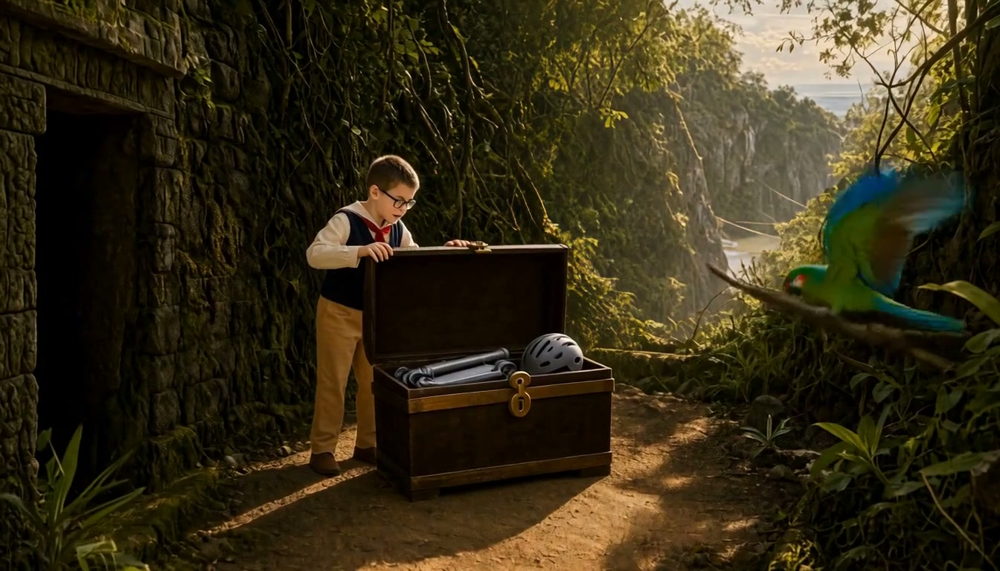
A night-time descent and the birthday ending
I removed extra locks, seals and a proposed scroll sending the character back to port. Instead, I wanted a Tomb Raider-style exit after finding the treasure: a sloping cable down to the beach. The scooter goes into a carrying case. The final setup uses a suspended trolley handle held with both hands rather than the ice-axe idea considered earlier.
Day transitions into night. The narrator gives the new captain a mission to explore roads and remember the helmet, and the character descends to the bay. I removed a separate first-ride clip from the latest edit, so the descent leads into the final greeting. On the beach, beside the scooter and wearing the helmet, the character looks toward a sky filling with stars. A shooting star accompanies the closing birthday wish.
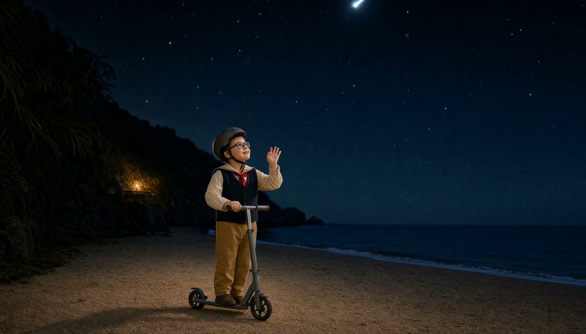
03 / Choosing models
A fast first attempt, then a much better image
My first video attempt used Wan 2.2. It was quick, but that older model’s result looked terrible to me for this project. The sound was usable; the picture and action were not. Switching to MiniMax H3 through FreeVideo made a major difference, especially in close-up detail. That improvement came with much longer waits, and it still depended on good keyframes.
| Task | Tool | Role |
|---|---|---|
| Keyframes | Qwen Image 2.1 | The principal image tool for connected scene states. |
| Some puzzle images | GPT Image | Alternative states and corrections in trial three. |
| Intelligible speech | Drama 3 | Consistent voices, short lines, pauses and performance. |
| Video | MiniMax H3 / FreeVideo | Motion, camera movement and environmental sound. |
| Orchestration and editing | Codex, ComfyUI MCP, FFmpeg | Workflows, inputs, run records, sound mixing and assembly. |
MiniMax H3 is the model; FreeVideo is the local inference tool I used to run it. Its documentation describes the VDN-H3 work from OpenVDN and Video DeltaNet. In this project I called FreeVideo through its CLI, while Qwen and Drama ran in local ComfyUI workflows through MCP.
Codex and ComfyUI MCP saved me a lot of manual setup. The agent found installed models, worked out how to use them, prepared workflows, connected nodes and kept the outputs organized. I still had to direct the scene and reject bad results. Many of the most useful instructions were specific observations: the river is frozen, the rope goes the wrong way, the character has not actually touched the sign.
04 / Memory and time
16 GB of VRAM, and about 52 GB of system RAM
I worked with an RTX 5070 Ti with 16 GB of VRAM. That is GPU memory, separate from system RAM. During a speech-generation run, I saw RAM usage reach roughly 52 GB. These are observations from my setup, not universal memory requirements for the models.
Other developers’ work made this practical. FreeVideo coordinates weights across VRAM, RAM and disk using techniques such as weight streaming, prefetching and chunked computation. My setup used its prepared int8 ConvRot cache. Qwen’s model and text encoder also used int8 ConvRot weights, while the installed Drama variant was named w4a8experts_bf16. Ready-made inference engines, compressed weights and ComfyUI integrations were essential parts of the pipeline.
I was building on the model developers’ work, OpenVDN and Video DeltaNet, FlashML-org’s FreeVideo, ComfyUI, PedroMarinhoDev’s Drama integration and the MCP tools. The agent helped connect those pieces. It did not invent the memory optimizations.
I had to unload idle ComfyUI models before heavy video jobs. Leaving speech or image models resident could starve the next stage of memory. Another trap was confusing portable ComfyUI’s Python with the MCP service environment. Installing missing packages one by one into the wrong interpreter did not fix the real launch problem; I eventually documented the correct startup procedure.
Speech was comparatively quick even on the CPU. Video took about a minute and a half per output second at 24 fps in my working setup. The baseline was 1344 × 768, a single pass and 16 steps. A ten-second experiment could therefore mean around fifteen minutes of waiting. A wrong keyframe was expensive, which made checking connected images before rendering video worth the effort. This is a practical estimate, not a total measured production time.
05 / Motion and its limits
The little movements that make the scene work
Two camera changes that mattered
The second clip of the bridge trial is an orbit around the character and the bridge. It reveals the valley’s depth, so courage becomes something visible. Earlier versions had a bridge barely above the ground, implausible ropes or a structure that looked far too safe. The camera move only helped once the location itself felt dangerous.
The second clip of the curiosity trial does a different job: it changes the view to show the blocked path from the character’s perspective. Showing the empty dead end before the character enters gives the viewer a chance to understand the problem. This was more useful than cutting straight to someone standing beside a sign.
Wind in the hair
In scene four, while the character receives the map on deck, the hair moves in the wind. It is a tiny detail, but I immediately noticed it. Along with the sea behind the ship, that movement makes the location feel like an actual breezy deck rather than a portrait pasted onto a background.
Water surprised me; the source images did not always help
Trial three was the most demanding sequence. The water needed to visibly flow, stop against a wrongly aligned channel, reach the next obstruction after one turn and eventually drive the wheel. I was surprised by how convincing the water’s physical behaviour could look in the successful MiniMax shots. That is my visual impression, not a claim that the model runs a fluid simulation.
At the same time, the GPT Image keyframes noticeably reduced the quality of the resulting video in this trial. In my attempts the character’s face and fine detail deteriorated. I tried adding a character reference to the video stage and later tried without it. A stronger video model could not simply recover detail and consistency that the input images had already lost. Qwen remained the main keyframe tool for the rest of the workflow.
I changed the puzzle pieces from square tiles to round discs so the turning action would read. Between states, the source, channels, wheel and door had to stay in the same place. The prompt also had to say what remained still: the wheel should not start just because water exists somewhere in the shot.
Taking things out of the chest
I liked how MiniMax handled the character collecting the gift. Hands, lid, clothing, scooter and helmet needed to interact within one scene. First I replaced an unconvincing keyframe in which the chest seemed to open by itself; the character now held its lid. Later he actually took the things with him. I still shortened the pause after packing, because a good action can be followed by a bad hold.
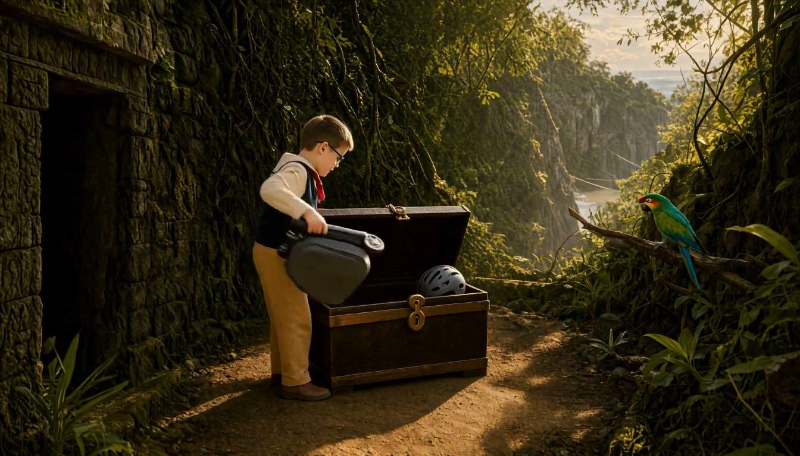
The parrot was a highlight
The parrot turned out particularly well. I made a separate video insert in which its beak tries to move with a human pirate line. Drama 3 provided the clear speech; the video supplied the performance. The result suggests a bird repeating a memorized phrase, without requiring me to pretend that every phoneme is perfectly synchronized.
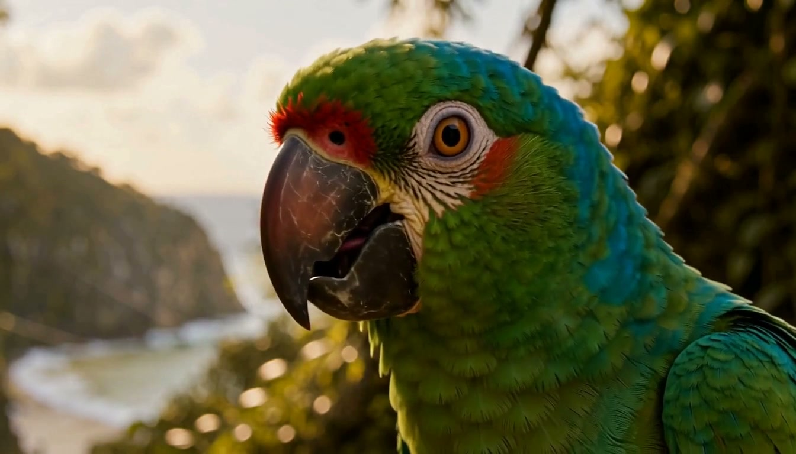
The hourglass did not work as well
Trial four had a weaker detail: the hourglass. Its sand and mechanism were less convincing than the water in trial three. I liked the speed, camera angles and parrot much more than this prop. Keeping that flaw in the account matters: a model can impress with subtle hair movement or water in one scene and struggle with a seemingly simple object in the next.
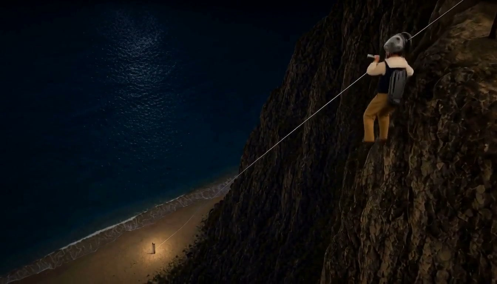
06 / Voices and sound
A performance assembled from several attempts
I kept shared voice references for continuity and saved each scene’s actual lines beside its footage. The dossier used the recording I supplied. The narrator, short character lines and parrot used their own established references. Drama 3’s expressive tags, pauses and pronunciation choices made a substantial difference.
For the parrot I wanted a rolled ‘r’, a pause after the cannons and an excited finish. One attempt had a wonderfully inarticulate opening cry; another was cut off. I combined the first two seconds of the early cry with a later spoken version, removing its first half-second. The accident became a character moment: the chest opens, the parrot wakes with a squawk and launches into its rehearsed speech. The final voice insert lasted 11.16 seconds.
FreeVideo could supply useful sea, foliage, birds and sometimes music together with the picture. I used Drama 3 for intelligible speech. In the speed sequence, the video model added nonsense voices, so the sound needed further editing. Precisely timed cracks, impacts and mechanism sounds could be separate effects.
Not all the audio was generated. Early scenes used Kevin MacLeod’s Adventures in Adventureland, and the sea ambience came from Joseph Sardin / BigSoundBank. I kept the source and licensing records with the project; the attribution is also included below.
07 / The production pipeline
The folder structure became the film’s memory
Once experiments started piling up, I organized the project around scenes and clips. Each scene got its own images, source video, voice lines, effects, workflows and edit. Shared faces, costume, voices and music lived separately. That helped the agent return to the same character and props instead of reinventing them.
Story → connected keyframes → review → speech and video → edit → review
I kept each shot’s prompt, media.json, input images, seed and generation parameters next to its task. The scene README recorded results, feedback, versions, approvals and remaining work. A main index tracked the whole story. A render finishing was different from me accepting it; an interrupted attempt did not become a finished clip.
scenes/
README.md story and current status
NN-scene-name/
README.md decisions and scene journal
frames/ connected keyframes
video/raw/ original generations
video/drafts/rejected/ rejected attempts
audio/voice/ dialogue
audio/sfx/ precise effects
workflows/ prompts, inputs, seeds, settings
output/ current complete scene
clips/ copies of accepted clips
work/archive/ superseded edits
shared/ common identity, voices, music
output/assemblies/ full-film assembliesI kept originals in video/raw, copies of accepted clips in output/clips and only one current complete scene in the root of output. Previous full edits went to work/archive. Some transitions used the actual last frame of the previous clip, including the move away from the chest toward the night-time cliff.
One achievement template, four trials
The achievement graphics were a pleasant surprise. I made one SVG template with a medallion, frame, colours and type, then reused it with a different title and trial number. They were added during editing, so I could change the wording, screen position or timing without asking the video model to regenerate anything.
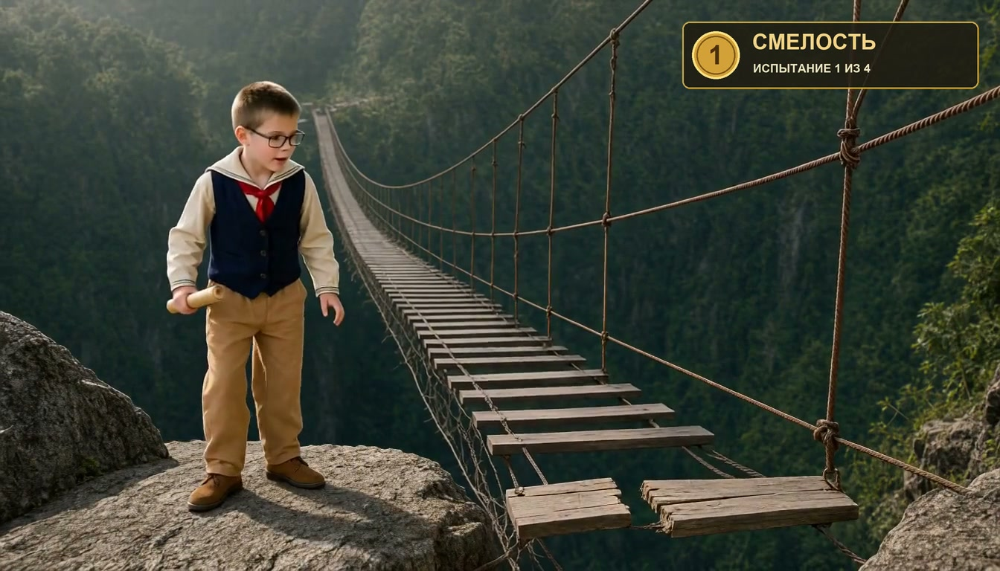
Originally the courage badge appeared before the character had crossed. Moving it to the landing, around 1:10 of the full film, fixed the problem. The same separation made it easy to change the trial count to four while keeping the design consistent.
08 / Final edits
Fixing the film without another generation
Using the same keyframe at the end of one clip and the start of the next kept compositions connected, but sometimes produced a visible freeze. I trimmed those duplicate held poses and moved the narration and achievement timing with the edit. I also moved the line about a failed attempt until after the wrong turn actually happened.
| Problem | Change |
|---|---|
| Bridge reward too early | Move it to the landing at 1:10. |
| Holds at puzzle joins | Trim duplicate poses in trials two and three. |
| Long freeze by the wheel | Remove another 2.5 seconds in v3. |
| Parrot cut too aggressively | Restore the flight and reaction: +1.75 seconds. |
| Waiting after packing | Remove 2.25 seconds before the departure. |
| Extra first-ride shot | Remove it before the birthday ending. |
The v2 assembly lasted 253.208 seconds; v3 lasts 250.250 seconds. Those few seconds matter when a character seems to wait for the next clip to begin. I preserved the raw media, and the edit notes record SHA-256 checks of the sources. The final assembly is 1344 × 768 at 24 fps with 48 kHz stereo audio.
The useful outcome was a repeatable process: direct an action, check connected keyframes, generate manageable shots, then fix the rhythm from preserved materials. The last changes needed a new edit rather than a fresh round of slow video rendering.
09 / The film
Four minutes of local filmmaking
Here is the v3 assembly discussed in this article. The film keeps its original Russian speech and on-screen lettering; the language selector translates the article.
Working cut v3 · 4:10.250 · Russian audio · Open the video ↗
All 12 scenes and their start times
- Ship and island
- Cabin and folder
- Illustrated dossier and stamp
- Receiving the map
- Landing
- Courage: bridge
- Curiosity: shell
- Ingenuity: water puzzle
- Speed: gate
- Chest and gift
- Night-time zipline
- Birthday under the stars
About the material
I reconstructed this account from my production chats, scene journals, workflow records and the v3 edit timeline. Stills are extracted from that assembly without retouching; their captions show the frame timestamp, not the scene start. Model comparisons, water behaviour, image degradation, timing and RAM usage are observations from my own attempts rather than controlled benchmarks.
Sources and credits
Music: Kevin MacLeod — Adventures in Adventureland, CC BY 4.0, edited and mixed with dialogue/effects. Ocean ambience: Joseph Sardin / BigSoundBank, CC0. Tools and models retain their upstream licenses.